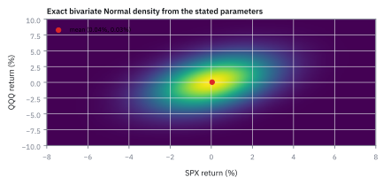

8.4 The Multivariate Normal Density
เปลี่ยนระฆังคว่ำหลายใบให้เป็นแบบจำลองร่วม แล้วแยกความสูงของ density ออกจาก probability
สมมติหุ้นสหรัฐสองตัวมี mean รายวันศูนย์, SD ตัวละ 2% และ joint Normal correlation 0.82 วันนี้ตัวหนึ่งขึ้น 3% อีกตัวลง 3% แต่ละตัวห่าง mean เพียง 1.5 SD แล้วเหตุใดคู่นี้จึงดูแปลกมากในแบบจำลองร่วม?
ลองตอบก่อนเปิดเฉลย
แบบจำลองคาดให้สองตัวเคลื่อนไหวไปด้วยกัน การสวนทางจึงมี squared Mahalanobis distance $q=25$ หรือระยะ $d=5$ โอกาสอยู่ภายนอกวงรีที่ไกลอย่างน้อยเท่านี้ในทุกทิศทางคือประมาณ $3.73\times10^{-6}$ ไม่ใช่ probability ของจุดที่เห็น และไม่ใช่ univariate “5-sigma tail”
เรากำลังเพิ่มสมมติฐานอะไรจาก covariance matrix
บทก่อนแสดงว่า mean และ covariance ชุดเดียวกันอยู่ร่วมกับ joint distributions ได้หลายแบบ ในหัวข้อนี้เราเลือกแบบจำลอง jointly Gaussian เพิ่มเข้ามา จึงคำนวณ density และ probability ของบริเวณต่าง ๆ ได้ ไม่ใช่ให้ covariance ตัดสินรูปร่าง distribution เอง
คำถามเปิดใช้หุ้นสมมติ SD เท่ากันและ correlation 0.82 ส่วนตัวอย่างหลักกับรูปใช้ SPX/QQQ สมมติที่ SD 2%/3% และ correlation 0.40 เราจะระบุค่าทั้งชุดก่อนคำนวณ ไม่สลับสองแบบจำลองนี้ระหว่างทาง
ศัพท์ที่ใช้ในหัวข้อนี้
- Multivariate Normal (MVN)
- joint Gaussian distribution สร้างได้จาก affine transformation ของ standard Normals ที่เป็นอิสระกัน ไม่ใช่แค่แต่ละ marginal เป็น Normal
- Mahalanobis distance
- ระยะจาก mean หลังปรับทั้งความกว้างและ co-movement ใช้ covariance เป็นเกณฑ์เทียบระยะ
- Whitening
- เปลี่ยนพิกัดให้ covariance เป็น identity ในกรณี joint Normal จะได้ Gaussian components อิสระด้วย แต่ covariance identity อย่างเดียวไม่ได้ให้ผลนี้สำหรับทุก distribution
- Jacobian / volume scaling
- ตัวคูณที่บอกว่าการเปลี่ยนพิกัดยืดพื้นที่หรือปริมาตรเท่าไร density ต้องปรับกลับเพื่อให้ probability คงเดิม
- Probability ellipse
- บริเวณวงรีที่ครอบคลุมสัดส่วนหนึ่งของผลลัพธ์ภายใต้แบบจำลอง ไม่ใช่ confidence region ของ mean ที่ยังไม่รู้ค่า
สัญลักษณ์และหน่วย
| สัญลักษณ์ | บทบาท |
|---|---|
| $R,r$ | vector ผลตอบแทนสุ่ม และค่าที่นำมาประเมิน ใช้ decimal returns เช่น 2% = 0.02 |
| $\mu,\Sigma$ | mean และ covariance ของผลตอบแทนช่วงถือครองเดียวกัน; covariance มีหน่วย decimal-return² |
| $s_i$ | marginal standard score $(r_i-\mu_i)/\sigma_i$ ซึ่งยังสัมพันธ์กันได้ |
| $z,L$ | พิกัด whitened และ matrix ที่ทำให้ $\Sigma=LL^{\mathsf T}$ |
| $q(r),d(r)$ | ระยะยกกำลังสองและระยะ Mahalanobis โดย $d=\sqrt q$ ทั้งคู่ไม่มีหน่วย |
ขั้นที่ 1 — เริ่มจากแหล่งสุ่มอิสระ แล้วผสมด้วย matrix
กำหนด $Z_1,\ldots,Z_n$ เป็น standard Normal ที่อิสระกัน จึงมี joint density เป็นผลคูณของ density รายตัว จากนั้นให้ $R=\mu+LZ$ โดย $L$ เป็น matrix คงที่
mean เลื่อนตำแหน่ง ส่วน $L$ หมุน ยืด หรือผสมการแกว่ง สูตร covariance มาจาก 8.2 ความเป็น Gaussian มาจากการเลือกแหล่งสุ่ม Gaussian ตั้งแต่ต้น ไม่ได้มาจากการมี covariance matrix เพียงอย่างเดียว
สำหรับ density เต็มมิติที่จะใช้ต่อไป ให้ $\Sigma$ เป็น symmetric positive definite จึงเลือก $L$ ที่ invertible ได้ เช่น Cholesky ซึ่งจะสร้างละเอียดใน 8.9 ถ้า $L$ ลด rank ก็ยังสร้าง Gaussian vector ได้ แต่ผลลัพธ์อยู่บนพื้นที่มิติต่ำกว่า และต้องแยกจากกรณี density เต็มมิติ
ขั้นที่ 2 — ทำไมมี determinant อยู่ใต้ density
บริเวณเล็ก ๆ ในพิกัด $z$ ถูก $L$ เปลี่ยนปริมาตรด้วยตัวคูณ $|\det L|$ probability ของบริเวณนั้นต้องเท่าเดิม เมื่อพื้นที่กว้างขึ้น density จึงต้องต่ำลงตามสัดส่วน ไม่ใช่เพิ่ม probability ขึ้นเอง
$dr,dz$ หมายถึงปริมาตรย่อย $n$ มิติ เช่นพื้นที่เมื่อ $n=2$ ไม่ใช่ระยะตามแกนเพียงเส้นเดียว พจน์ $q$ วัดความไกล ส่วน determinant ปรับความสูงให้ probability รวมยังเป็น 1
ตรวจ normalization ด้วยการเปลี่ยนกลับไปพิกัดเดิม: $\int f_R(r)\,dr=\int f_Z(z)\,dz=1$ จาก density ของแหล่งสุ่มอิสระ นี่คือเหตุผลเชิงโครงสร้าง ไม่ใช่เพียงผลรวมบนกริดที่ปัดแล้วใกล้หนึ่ง
ขั้นที่ 3 — ใส่ค่าของแบบจำลอง SPX/QQQ ให้ครบก่อน
กำหนดผลตอบแทนหนึ่งวันสมมติ: SPX มี mean 0.04% และ SD 2%; QQQ มี mean 0.03% และ SD 3%; correlation 0.40 ตัวเลขนี้เป็น parameter ของตัวอย่าง ไม่ใช่ค่าประมาณตลาดปัจจุบัน
mean กับ SD ใช้ decimal returns ส่วน covariance ใช้ decimal-return² ของผลตอบแทนหนึ่งวัน ไม่ต้องเติมตัวหาร day² เพียงเพราะข้อมูลวัดรายวัน การใส่ correlation 0.40 ลงช่อง covariance ตรง ๆ จะผิดทั้งขนาดและหน่วย
ตรวจ positive definiteness และ inverse ด้วยมือ
ช่อง variance แรกเป็นบวกและ determinant เป็นบวก จึงผ่านเกณฑ์ PD สำหรับ symmetric 2×2 จาก 7.6 ใช้ inverse ของ 2×2 มาคำนวณได้ดังนี้
ในโค้ดเราจะ solve ผ่าน $L$ แทนการสร้าง inverse เพราะต้องการ $z$ และ $q$ ไม่ใช่ทุกช่องของ inverse นี่ไม่ใช่การเปลี่ยนสูตร แต่เป็นวิธีคำนวณสูตรเดียวกัน
ขั้นที่ 4 — Density 289 ไม่ได้แปลว่า probability เกิน 100%
โจทย์ให้อะไรมาบ้าง: ใช้แบบจำลองข้างบน หาความน่าจะเป็นที่ผลตอบแทนแต่ละตัวอยู่ห่าง mean ไม่เกิน 0.1 percentage point หรือ 0.001 ในหน่วย decimal
กล่องนี้มีด้านยาว 0.002 ทั้งสองแกน ถ้า density เปลี่ยนไม่มากภายในกล่อง สามารถประมาณ probability ด้วยความสูงที่ mean คูณพื้นที่ได้ การ integrate ทั้งกล่องให้ค่าที่ละเอียดกว่า
คำตอบ: probability ประมาณ 0.116% ไม่ใช่ 289 เท่าของโอกาสอะไร และ $P(R=\mu)=0$ เพราะจุดเดียวไม่มีพื้นที่ใน distribution ต่อเนื่องเต็มมิติ
ตรวจเองใน 10 วินาที: หากเปลี่ยนหน่วยแกนเป็น percentage points พื้นที่กล่องจะเพิ่ม $100^2$ เท่า แต่ density ลดลง $100^2$ เท่า ผลคูณและ probability ต้องเท่าเดิม
Figure 8.4a — ความสูงของ joint density

ขั้นที่ 5 — ทำไมการขึ้นพร้อมกันต่างจากการสวนทาง
ให้ $s_i=(r_i-\mu_i)/\sigma_i$ เป็น marginal standard scores อย่าเพิ่งเรียกสองค่านี้ว่า independent coordinates เพราะยังมี correlation $\rho$ อยู่ ขยาย quadratic form ของ symmetric 2×2 จะได้
สำหรับ positive correlation พจน์ไขว้ลดระยะเมื่อ signs ตรงกัน และเพิ่มระยะเมื่อ signs สวนกัน แต่ต้องเทียบคะแนนที่ระบุ ไม่ใช่สรุปว่าเหตุการณ์สวนทางทุกชนิดแทบเป็นไปไม่ได้
| Marginal scores | $q$ | $f/f(\mu)$ | Density ในหน่วย decimal |
|---|---|---|---|
| $(1,1)$ | 1.428571 | 0.489542 | 141.6834 |
| $(1,-1)$ | 3.333333 | 0.188876 | 54.6645 |
0.4895 กับ 0.1889 เป็น สัดส่วนความสูงเทียบกับ peak ไม่ใช่ความสูงของ density เอง และไม่ใช่ probability ของแต่ละจุด ต่อให้จุดสองจุดมี density เท่ากัน แต่ละจุดก็ยังมี probability ศูนย์
ถ้า $\rho=0$ เราจะได้ $q=s_1^2+s_2^2$ และ normalizer เป็น $1/(2\pi\sigma_1\sigma_2)$ จึงแยก $f_R(r)=f_1(r_1)f_2(r_2)$ ได้ตาม 8.3 ข้อนี้อาศัย joint Normal อยู่แล้ว ไม่ใช่ทฤษฎีของทุกคู่ตัวแปรที่ correlation ศูนย์
ขั้นที่ 6 — Whitening ทำให้วัดระยะด้วยวงกลมได้
สำหรับตัวอย่างหลัก เลือก $L$ เป็นสามเหลี่ยมล่าง จาก $\Sigma=LL^{\mathsf T}$ ช่องแรกให้ $L_{11}=0.02$ ช่อง covariance ให้ $L_{21}=0.012$ และ variance ที่เหลือให้ $L_{22}=\sqrt{0.000756}$
พจน์ $0.012z_1$ เอาส่วนที่เคลื่อนไหวร่วมกับแกนแรกออกก่อนปรับ SD ของส่วนที่เหลือ นี่ต่างจากการหาร SD รายตัวอย่างเดียว $z$ เป็นพิกัด whitened ส่วน $s$ ในขั้นก่อนยังเป็นคะแนนที่ correlated กัน
ที่ผลตอบแทน $(3\%,-2\%)$ เราได้ $z\approx(1.48,-1.384229)$, $q\approx4.106489$ และ density ประมาณ 37.1378 การคำนวณด้วย inverse ในขั้นที่ 3 ต้องให้ $q$ เดียวกัน จึงใช้ตรวจการเรียงแกนและหน่วยได้
Figure 8.4b — เส้นระดับคือระยะ $q$ คงที่

ขั้นที่ 7 — วงรีหนึ่งหน่วยไม่ได้ครอบคลุม 68% ในสองมิติ
เมื่อ joint model ถูกและใช้ $\mu,\Sigma$ จริงที่กำหนดคงที่ พิกัด whitened เป็น independent standard Normals ดังนั้น $Q=q(R)=\sum_i Z_i^2$ มี distribution $\chi_n^2$ ในสองมิติหาความน่าจะเป็นในวงกลมด้วย polar coordinates ได้โดยตรง
ตัวคูณ $u$ ในอินทิกรัลมาจากพื้นที่ polar ไม่ใช่ปรับค่าคงที่ตามใจ สูตร $e^{-q/2}$ สำหรับ probability ภายนอกเป็นผลเฉพาะ $n=2$ หากเปลี่ยนจำนวนมิติ ต้องใช้ distribution $\chi_n^2$ ที่ตรงกัน
ในพิกัดเดิม วงกลมเปลี่ยนเป็นวงรี ถ้า eigenvalues เป็น $\lambda_i$ ความยาวครึ่งแกนของวงรีระดับ $q=c^2$ คือ $c\sqrt{\lambda_i}$ ตามแกน eigenvectors ตัวอย่างนี้วงรี 95% มีครึ่งแกนประมาณ 7.7271 และ 4.2639 percentage points
บริเวณนี้ครอบคลุมผลตอบแทนใหม่จากแบบจำลอง 95% ไม่ใช่ช่วงความเชื่อมั่นของ mean ที่ยังไม่รู้ หากประมาณ mean/covariance จากข้อมูลแล้วนำกลับมาวัดข้อมูลชุดเดียวกัน การกระจายของสถิติเปลี่ยนไป อย่าใช้ค่า $\chi_n^2$ แบบ exact โดยละเงื่อนไขการประมาณ
Figure 8.4c — เปลี่ยน correlation แล้วรูปทรงเปลี่ยน

ขั้นที่ 8 — ตอบคำถามเปิดโดยไม่เปลี่ยน tail probability เป็นเรื่องของจุด
โจทย์ให้อะไรมาบ้าง: กลับไปใช้หุ้นสองตัว mean ศูนย์, SD 2% เท่ากัน, correlation 0.82 และ joint Normal ผลตอบแทน $(3\%,-3\%)$ จึงมี marginal scores $(1.5,-1.5)$
คำตอบ: แบบจำลองให้ probability ประมาณ 0.000373% สำหรับผลลัพธ์ที่ไกลอย่างน้อยเท่านี้เมื่อรวมทุกทิศทาง ตัวเลขนี้ไม่ได้ระบุ probability ของจุด $(3\%,-3\%)$ ซึ่งเป็นศูนย์ และไม่ใช่ probability ของทุกเหตุการณ์ที่หุ้นสวนทางกัน
ตรวจเองใน 10 วินาที: ถ้าทั้งคู่ขึ้น 3% scores จะเป็น $(1.5,1.5)$ ทำให้ $q=2.472527$ และ radial tail ประมาณ 0.290467 แม้ขนาด marginal scores เท่าเดิม ทิศทางร่วมเปลี่ยนความหมายของระยะ
ค่ากลับประมาณ 268,337 เป็นจำนวนครั้งรอเฉลี่ยได้ภายใต้การสุ่มอิสระซ้ำจากแบบจำลองเดิมที่ parameter คงที่เท่านั้น ไม่ใช่คำพยากรณ์ปฏิทินของตลาด เหตุการณ์ที่มี model probability ต่ำอาจเป็น draw ที่หายาก ความคลาดเคลื่อนของ parameter การเปลี่ยนสภาวะ หรือปัญหาข้อมูล ต้องแยกตรวจ ไม่ใช่สรุปสาเหตุจากตัวเลขเดียว
ขั้นที่ 9 — Covariance singular ไม่ได้ทำให้ Gaussian model ทุกแบบเป็นไปไม่ได้
ให้ $R=(Z,Z)$ เมื่อ $Z\sim N(0,1)$ เป็น Gaussian vector ที่ถูกต้อง แต่ covariance เป็น $\begin{bmatrix}1&1\\1&1\end{bmatrix}$ ซึ่ง rank 1 ผลลัพธ์อยู่บนเส้น $r_1=r_2$ ทั้งหมด เส้นนี้มีพื้นที่สองมิติศูนย์ แต่มี probability หนึ่ง
จึงไม่มี density เทียบกับพื้นที่สองมิติทั่วไปให้ใช้สูตรข้างบน ต้องทำงานในพิกัดอิสระบนเส้นนั้น ไม่ควรเปลี่ยน inverse เป็น pseudoinverse แล้วอ้างว่าสูตร density เต็มมิติได้รับการซ่อมแล้ว
ส่วนตัวอย่าง $Y=WX$ ของ 8.3 มี covariance identity ซึ่งเป็น PD แต่ joint distribution ไม่ใช่ Gaussian ทั้งสองกรณีสอนคนละเรื่อง: PD ช่วยให้สูตรของ Gaussian ที่เลือกไว้ใช้ได้ ไม่ได้พิสูจน์ว่าข้อมูลมาจาก Gaussian
Figure 8.4d — ตรวจ numerical integration เทียบกับทฤษฎี

ก่อนใช้ density หรือระยะตัดสินความเสี่ยง
| ต้องแยกให้ชัด | สิ่งที่ตรวจ |
|---|---|
| แบบจำลองกับข้อมูล | marginals ดู Normal และ covariance ผ่าน PD ยังไม่ยืนยัน jointly Normal; ตรวจ joint tails และข้อมูลนอกชุดที่ใช้ fit |
| density กับ probability | density เปลี่ยนเมื่อเปลี่ยนหน่วย; probability ต้อง integrate บริเวณที่นิยามชัดเจน |
| ระยะกับการสอบเทียบ | $q$ คำนวณได้ไม่ได้แปลว่าใช้ $\chi_n^2$ ได้ทันที; ต้องตรวจ distribution, parameter estimation และการทดสอบหลายครั้ง |
| ค่าศูนย์จากเครื่องกับเหตุการณ์เป็นไปไม่ได้ | density อาจ underflow เป็นศูนย์ ใช้ log-density เมื่อเปรียบเทียบ likelihood ที่เล็กมาก |
ชื่อ Mahalanobis distance เตือนว่าระยะต้องเทียบกับความแปรปรวนและความสัมพันธ์ร่วม ไม่ใช่ไม้บรรทัด Euclidean อย่างเดียว แต่การปรับระยะไม่สามารถแก้ทุกปัญหาของแบบจำลอง เช่น skewness, jumps, heavy tails หรือ covariance ที่เปลี่ยนไป
ตรวจเองก่อนผ่านไป 8.5
1. เปลี่ยนพิกัดเป็น $U=100R$ ซึ่งตัวเลข 1 หมายถึง 1 percentage point ค่า covariance, peak density และ $q$ เปลี่ยนอย่างไร?
เฉลย
mean คูณ 100, covariance คูณ 10,000; density ต้องหาร 10,000 จึงได้ peak ประมาณ 0.0289420 ส่วน $q$ ไม่เปลี่ยนเมื่อเปลี่ยนทั้งค่าที่ประเมิน mean และ covariance อย่างสอดคล้อง จึงได้ probability ของบริเวณทางเศรษฐกิจเดิมเท่าเดิม
2. ใช้รัศมี Mahalanobis 1.96 ในสองมิติ จะครอบคลุม 95% เหมือน univariate Normal หรือไม่?
เฉลย
ไม่ใช่ ได้ $1-e^{-1.96^2/2}\approx85.3510\%$ ต้องใช้รัศมีประมาณ 2.447747 สำหรับ 95% ภายใต้ joint Normal สองมิติที่ parameter กำหนดไว้
3. ใน sign-mixture จาก 8.3 คือ $Y=WX$ โดย $X\sim N(0,1)$ เรามี covariance identity จึงคำนวณ $Q=X^2+Y^2$ ได้ จะใช้ $\chi_2^2$ กับ $Q$ ได้หรือไม่?
เฉลย
ไม่ได้ เพราะ $Q=2X^2$ มี variance $4\operatorname{Var}(X^2)=8$ ส่วน $\chi_2^2$ เป็นผลรวมกำลังสองของ standard Normals อิสระสองตัว จึงมี variance $2+2=4$ ทั้งคู่มี mean 2 แต่ distribution ต่างกัน การ whitening ให้ covariance identity ไม่ได้สร้าง Gaussian independence ขึ้นเอง
คำนวณซ้ำด้วย JavaScript
ใช้ Node.js ได้โดยไม่ติดตั้งแพ็กเกจ ตัวอย่างนี้รับเฉพาะ covariance symmetric PD ขนาด 2×2 และใช้ triangular solve/log-density ไม่แก้ covariance ให้ผ่านเงียบ ๆ การตรวจ symmetry ใช้ exact equality สำหรับตัวเลขที่กำหนดตรงกัน; ข้อมูลจริงต้องแยก rounding error ด้วย tolerance ที่เหมาะกับขนาดข้อมูล
การ integrate ใช้กริดจำกัด ต้องตรวจทั้งความละเอียดและขอบเขต ไม่ใช่ว่าโค้ดคำนวณได้แล้ว error จะเล็กสำหรับทุก covariance
function vector2(v) {
if (!Array.isArray(v) || v.length !== 2 || ![...v].every(Number.isFinite)) {
throw new TypeError('Need two finite coordinates');
}
}
function normal2(mean, covariance) {
vector2(mean);
if (!Array.isArray(covariance) || covariance.length !== 2 ||
[...covariance].some(row => !Array.isArray(row) || row.length !== 2 || ![...row].every(Number.isFinite))) {
throw new TypeError('Need a finite 2 by 2 covariance');
}
const mu = [...mean], a = covariance[0][0], c = covariance[0][1], d = covariance[1][1];
if (c !== covariance[1][0]) throw new RangeError('Covariance must be symmetric');
if (a <= 0 || d <= 0) throw new RangeError('Positive definite covariance required');
const s1 = Math.sqrt(a), s2 = Math.sqrt(d), rho = c / s1 / s2;
if (!Number.isFinite(rho) || Math.abs(rho) >= 1) throw new RangeError('Positive definite covariance required');
const residualScale = Math.sqrt((1 - rho) * (1 + rho));
const L = [[s1, 0], [rho * s2, s2 * residualScale]];
const logPeak = -Math.log(2 * Math.PI) - Math.log(s1) - Math.log(s2) - Math.log(residualScale);
function whiten(r) {
vector2(r);
const z1 = (r[0] - mu[0]) / s1;
const z2 = ((r[1] - mu[1]) / s2 - rho * z1) / residualScale;
if (![z1, z2].every(Number.isFinite)) throw new RangeError('Whitening overflow');
return [z1, z2];
}
function transform(z) {
vector2(z);
const r = [mu[0] + s1 * z[0], mu[1] + L[1][0] * z[0] + L[1][1] * z[1]];
if (!r.every(Number.isFinite)) throw new RangeError('Transformation overflow');
return r;
}
function q(r) {
const z = whiten(r), value = z[0] * z[0] + z[1] * z[1];
if (!Number.isFinite(value)) throw new RangeError('Distance overflow');
return value;
}
const logDensity = r => logPeak - q(r) / 2;
function density(r) {
const value = Math.exp(logDensity(r));
if (!Number.isFinite(value)) throw new RangeError('Density overflow: use logDensity');
return value;
}
return {rho, L, logPeak, whiten, transform, q, logDensity, density};
}
function coverage2(q) {
if (!Number.isFinite(q) || q < 0) throw new RangeError('Need nonnegative finite squared distance');
return -Math.expm1(-q / 2);
}
function threshold2(p) {
if (!Number.isFinite(p) || p <= 0 || p >= 1) throw new RangeError('Coverage must lie strictly between zero and one');
return -2 * Math.log1p(-p);
}
function rectangleMass(model, x, y, n = 200) {
vector2(x); vector2(y);
if (x[0] > x[1] || y[0] > y[1]) throw new RangeError('Integration bounds out of order');
if (!Number.isInteger(n) || n < 2 || n > 1000 || n % 2) throw new RangeError('Need an even grid from 2 to 1000');
if (x[0] === x[1] || y[0] === y[1]) return 0;
const hx = (x[1] - x[0]) / n, hy = (y[1] - y[0]) / n;
if (![hx, hy].every(Number.isFinite)) throw new RangeError('Integration overflow');
const weight = i => i === 0 || i === n ? 1 : i % 2 ? 4 : 2;
let sum = 0;
for (let i = 0; i <= n; i++) for (let j = 0; j <= n; j++) {
sum += weight(i) * weight(j) * model.density([x[0] + i * hx, y[0] + j * hy]);
}
const result = sum * hx * hy / 9;
if (!Number.isFinite(result)) throw new RangeError('Integration overflow');
return result;
}
const mu = [0.0004, 0.0003], S = [[0.0004, 0.00024], [0.00024, 0.0009]];
const model = normal2(mu, S), peak = model.density(mu);
const scorePoint = s => [mu[0] + 0.02 * s[0], mu[1] + 0.03 * s[1]];
const scores = [[1, 1], [1, -1]].map(s => {
const r = scorePoint(s);
return {s, q: model.q(r), ratio: model.density(r) / peak, density: model.density(r)};
});
const point = [0.03, -0.02], q95 = threshold2(0.95), radius95 = Math.sqrt(q95);
const hook = normal2([0, 0], [[0.0004, 0.000328], [0.000328, 0.0004]]);
const hookQ = hook.q([0.03, -0.03]);
const percentage = normal2(mu.map(x => 100 * x), S.map(row => row.map(x => 10000 * x)));
const smallBounds = [[mu[0] - .001, mu[0] + .001], [mu[1] - .001, mu[1] + .001]];
const eigenGap = Math.hypot(S[0][0] - S[1][1], 2 * S[0][1]);
const eigenvalues = [(S[0][0] + S[1][1] + eigenGap) / 2, (S[0][0] + S[1][1] - eigenGap) / 2];
console.log(JSON.stringify({rho: model.rho, L: model.L,
determinant: S[0][0] * S[1][1] - S[0][1] ** 2, peak, scores,
point: {r: point, z: model.whiten(point), q: model.q(point), density: model.density(point)},
q95, radius95, coverage1: coverage2(1), coverage196: coverage2(1.96 ** 2),
axes95: eigenvalues.map(v => Math.sqrt(q95 * v)),
boundaryQ: [0, Math.PI / 2, Math.PI, 3 * Math.PI / 2].map(t =>
model.q(model.transform([radius95 * Math.cos(t), radius95 * Math.sin(t)]))),
hook: {oppositeQ: hookQ, sameQ: hook.q([.03, .03]),
tail: Math.exp(-hookQ / 2), reciprocal: Math.exp(hookQ / 2)},
percentage: {peak: percentage.density(mu.map(x => 100 * x)), q: percentage.q(point.map(x => 100 * x))},
smallSquareApprox: peak * .002 ** 2,
smallSquareMass: rectangleMass(model, ...smallBounds),
gridMass: rectangleMass(model, [-.12, .12], [-.18, .18]),
nonGaussianQVariance: 4 * 2, gaussianQVariance: 2 + 2 }));สิ่งที่ควรตอบได้หลังอ่าน
- MVN เป็น joint-model assumption เพิ่มจาก mean/covariance สูตร density เต็มมิติต้องมี symmetric PD covariance
- density เกิดจาก Gaussian coordinates และการปรับปริมาตร; determinant คุม normalizer ส่วน quadratic form คุมระยะ
- marginal standard scores ยังสัมพันธ์กันได้; whitening ต่างออกไป และไม่ได้สร้าง independence สำหรับทุก distribution
- probability ต้องเป็นของบริเวณ ไม่ใช่ความสูงที่จุด; เปลี่ยนหน่วยแล้ว density เปลี่ยนแต่ probability ของบริเวณเดิมต้องคงเดิม
- วงรี 95% ในสองมิติใช้ $q\le5.991465$ ไม่ใช่รัศมี 1 หรือ 1.96 และไม่ใช่ confidence region ของ mean ที่กำลังประมาณ
- Gaussian singular อาจเป็นแบบจำลองที่ถูกต้องบนมิติต่ำกว่า ส่วน covariance PD ก็ไม่ได้พิสูจน์ Gaussianity; ก่อนใช้ tail threshold ต้องตรวจทั้งสองเรื่อง